SEM
0.6.0
Here we compare the results of PAMLj
with other software that performs power analysis for SEM. At the moment,
the only R package that explicitly deals with SEM power analysis is the
semPower, so
we are going to compare results with it. The example are taken from
Moshagen and Bader (2024), by the authors of
semPower.
Factor Analysis
Setup
- Aim = N
- power = .80
- Alpha = .05
- Latent = 2 factors
- Observed = variables for each factor
- Loadings = all .5
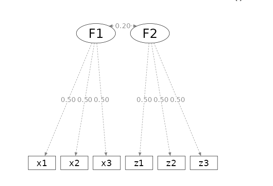
in semPower one can obtain the required N by issue the
following command.
model1<-semPower.powerCFA(type="a-priori", alpha=.05,power=.80,comparison="restricted",
loadings=list(
c(.5,.5,.5),
c(.5,.5,.5)
),
Phi=.2,
nullEffect= 'cor = 0',
plotShow=FALSE
)
summary(model1)##
## semPower: A priori power analysis
##
## F0 0.010050
## RMSEA 0.100251
## Mc 0.994987
##
## df 1
## Required Num Observations 783
##
## Critical Chi-Square 3.841459
## NCP 7.859363
## Alpha 0.050000
## Beta 0.199476
## Power (1 - Beta) 0.800524
## Implied Alpha/Beta Ratio 0.250657The same results can be obtained in PAMLj. In the module, we need to specify the model we have in mind, and which parameter is to be tested, that is constrained to zero.
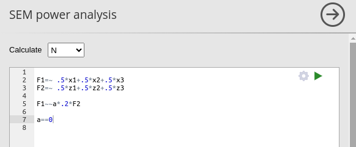
Setting the power parameters as intended
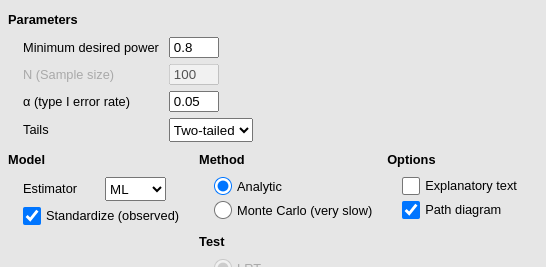
we obtain the same results as before.

We can check now that both packages reaches the same conclusion also
if we set \(N=783\) and ask for the
expected power.
model2<-semPower.powerCFA(type="post-hoc", alpha=.05,N=783,comparison="restricted",
loadings=list(
c(.5,.5,.5),
c(.5,.5,.5)
),
Phi=.2,
nullEffect= 'cor = 0',
plotShow=FALSE
)
summary(model2)##
## semPower: Post hoc power analysis
##
## F0 0.010050
## RMSEA 0.100251
## SRMR 0.032733
## Mc 0.994987
## GFI 0.996661
## AGFI 0.929883
## CFI 0.971272
##
## df 1
## Num Observations 783
## NCP 7.859363
##
## Critical Chi-Square 3.841459
## Alpha 0.050000
## Beta 0.199476
## Power (1 - Beta) 0.800524
## Implied Alpha/Beta Ratio 0.250657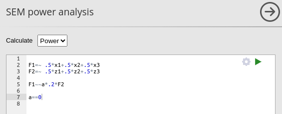
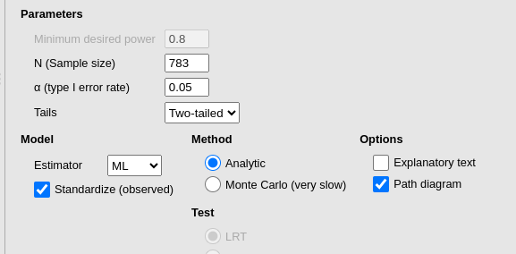
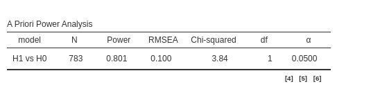
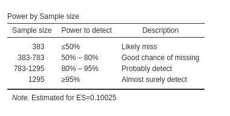
It is useful to verify also the sensitivity analysis table Power by Sample size. We can see that it says
that for \(N<383\), we should expect
a power less than \(.50\). We can
verify this with semPower.
model3<-semPower.powerCFA(type="post-hoc", alpha=.05,N=383,comparison="restricted",
loadings=list(
c(.5,.5,.5),
c(.5,.5,.5)
),
Phi=.2,
nullEffect= 'cor = 0',
plotShow=FALSE
)
summary(model3)##
## semPower: Post hoc power analysis
##
## F0 0.010050
## RMSEA 0.100251
## SRMR 0.032733
## Mc 0.994987
## GFI 0.996661
## AGFI 0.929883
## CFI 0.971272
##
## df 1
## Num Observations 383
## NCP 3.839228
##
## Critical Chi-Square 3.841459
## Alpha 0.050000
## Beta 0.500183
## Power (1 - Beta) 0.499817
## Implied Alpha/Beta Ratio 0.099963coherently, we obtain a power of \(0.499817\).
Latent variables regression
Let’s now consider a popular model with three latent variables, one
common cause of the other two, each measured with some indicators. We
consider the PoliticalDemocracy example in (lavaan
webpage)[https://lavaan.ugent.be/].
Setup
- Aim = N
- power = .90
- Alpha = .05
- Latent = 3 factors:
ind60dem06anddem65 - Observed = 3 for
ind60, 4 fordem06and 4 fordem65 - Loadings = .6 for
ind60, .8 fordem06and .8 fordem65 - \(\beta\) :
\(dem60=.3*ind60\)
\(dem65=.3*ind60+.2*dem60\)
The model looks like this:
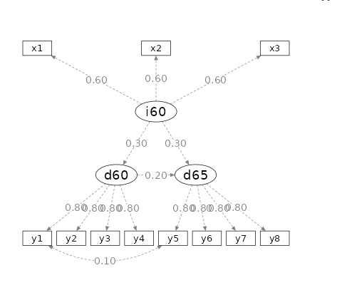
we want to test that at least one effect on dem65 is
significant, and obtain the required N to achieve that. This means that
we need to constrain both \(dem65=.3*ind60\) and \(dem65=.2*dem60\) to zero. In PAMLj we set the model like this.
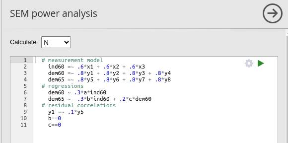
and we obtain
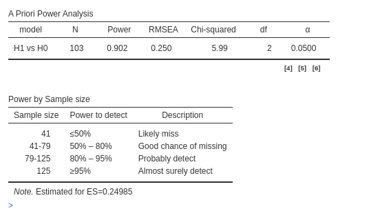
In semPower we can obtain the required power parameters
as follows:
popModel<-'
ind60 =~ .6*x1 + .6*x2 + .6*x3
dem60 =~ .8*y1 + .8*y2 + .8*y3 + .8*y4
dem65 =~ .8*y5 + .8*y6 + .8*y7 + .8*y8
# regressions
dem60 ~ .3*ind60
dem65 ~ .3*ind60 + .2*dem60
# residual correlations
y1 ~~ .1*y5
'
h1Model<-'
ind60 =~ x1 + x2 + x3
dem60 =~ y1 + y2 + y3 + y4
dem65 =~ y5 + y6 + y7 + y8
# regressions
dem60 ~ a*ind60
dem65 ~ b*ind60 + c*dem60
# residual correlations
y1 ~~ y5
'
h0Model<-'
ind60 =~ x1 + x2 + x3
dem60 =~ y1 + y2 + y3 + y4
dem65 =~ y5 + y6 + y7 + y8
# regressions
dem60 ~ a*ind60
dem65 ~ b*ind60 + c*dem60
# residual correlations
y1 ~~ y5
b==0
c==0
'
model4<-semPower.powerLav("a-priori",modelPop=popModel,
modelH0=h0Model,
modelH1=h1Model,
power=.90,alpha=.05,
plotShow=FALSE)
summary(model4)##
## semPower: A priori power analysis
##
## F0 0.074172
## RMSEA 0.192578
## Mc 0.963593
##
## df 2
## Required Num Observations 172
##
## Critical Chi-Square 5.991465
## NCP 12.68348
## Alpha 0.050000
## Beta 0.099293
## Power (1 - Beta) 0.900707
## Implied Alpha/Beta Ratio 0.503561#lmod<-lavaan::sem(popModel)
#lavaan::lavInspect(lmod,"cov.lv")
#lavaan::lavInspect(lmod,"cor.lv")
#lavaan::lavInspect(lmod,"std")This is a remarkable difference! \(N=103\) rather than \(N=172\) is clearly a substantial
difference, not just an approximation error. The conundrum is easily
explained: PAMLj assumes that all
variables, both observed and latent, are completely standardized, while
semPower does not. Therefore, in semPower, it
is the user’s responsibility to ensure that the scales of the variables
are correct.
As proof, in PAMLj, we can deselect
the option Standardized solution, and we
will get exactly the same results as we did in
semPower.
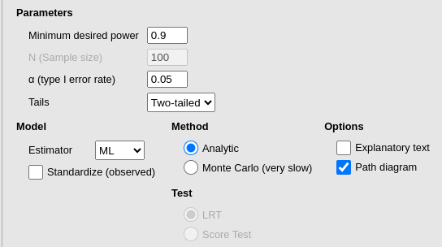
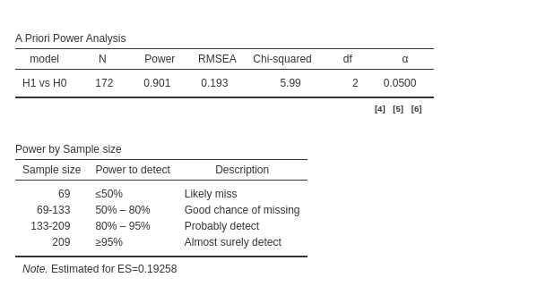
However, if the user’s intention is to insert standardized coefficients, the standardized option must be selected. Otherwise, the implied coefficients will differ from the expected ones. To verify this, while keeping the model non-standardized, we can check the Implied Latent Covariances and Standardized regression coefficients in the | Options panel ”
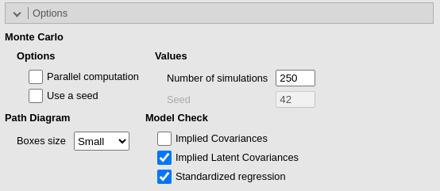
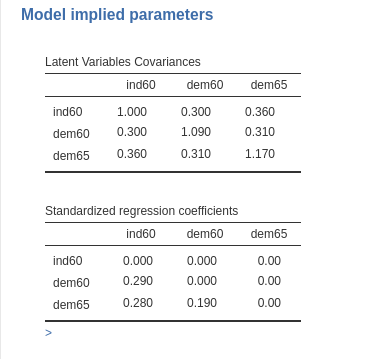
The first table lists the variance-covariance matrix of the latent
variables. From the diagonal (variances), it is clear that the latent
variables are not standardized. As a result, the
Standardized regression coefficients are not the ones we
input but a smaller version (in this case). For example, the coefficient
from ind60 to dem65 is \(.280\), even though we input \(.30\). These are the actual coefficients
implied by the unstandardized model and are the ones used to compute
power. This explains why the unstandardized model requires a larger
\(N\).
If we standardize the model (with the Standardized solution option selected), the covariances appear correctly standardized, and the regression coefficients are the ones we intended to use.
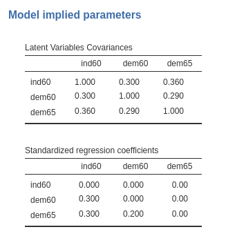
Comments?
Got comments, issues or spotted a bug? Please open an issue on PAMLj at github or send me an email